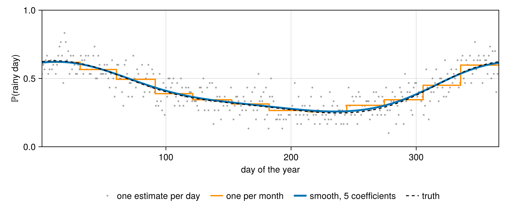

SmoothPeriodicStatsModels.jl
A package for statistical models with varying parameters
Day by day, seasons change, and so does your model
Smooth by construction
Each parameter is a few coefficients of a basis, trigonometric polynomials, periodic or plain B-splines, through a link that keeps it in its domain. No jumps from day to day or month to month.
From AR(1) to Hidden Markov Models
Seasonal autoregressive processes, mixtures with components of different families, and HMMs with Bernoulli, multivariate or copula emissions.
Built on the Julia ecosystem
Laws from Distributions.jl, inference from HiddenMarkovModels.jl, and any solver or automatic differentiation backend of Optimization.jl.
Model in, model out
fit_mle(model, data) returns the fitted model and its history, and fit(SeasonalFit, …) adds the BIC for model selection.
SmoothPeriodicStatsModels
Statistical models whose parameters change smoothly along a cycle, such as the days of a year, fitted by maximum likelihood.
Why smooth?
Weather is the motivating case. A stochastic weather generator simulates plausible weather series for impact studies, and must reproduce their seasonality: the probability of a rainy day, the probability that a dry spell ends, the variance of temperatures and the frequency of each weather regime all change over the year.
Take $p(t)$, the probability that day $t \in \{1, \dots, 366\}$ of the year is rainy, and 30 years of data:
- One estimate per day: $\hat p(t)$ is the frequency of rain on day $t$. Each of the 366 estimates rests on 30 observations, so the curve is noisy.
- One estimate per month, the usual remedy: $p(t) = p_{m(t)}$, with $m(t)$ the month of day $t$. Each of the 12 estimates rests on about 900 observations, but $p$ jumps at every change of month, and so do the simulated series. Gluing the months back together, by interpolation or smoothing, is a separate step with arbitrary choices, outside the likelihood. In a hidden Markov model fitted month by month, the regimes of March must also be matched to those of April.
- Smooth, this package: a few coefficients for the whole year,
\[p(t) = \operatorname{logistic}\big(P(t)\big), \qquad P(t) = c_0 + \sum_{\ell=1}^{d} \left( c_{2\ell-1} \cos\frac{2\pi \ell t}{T} + c_{2\ell} \sin\frac{2\pi \ell t}{T} \right), \qquad T = 366.\]
$P$ is a trigonometric polynomial of degree $d$, with $2d + 1$ coefficients, and the logistic function $1/(1 + e^{-x})$ keeps $p$ in $(0, 1)$. The coefficients are fitted by maximum likelihood to all the data at once, $p$ is smooth by construction, and the hidden regimes of a Markov model keep one meaning all year round.
Every parameter of every model is built this way: $\lambda(t) = g^{-1}\big(P(t)\big)$, with a link $g$ that keeps $\lambda$ in its domain (logit for a probability, log for a scale, softmax for transition probabilities). Other bases, such as periodic B-splines, can replace the trigonometric one, parameter by parameter.

The probability of a rainy day at one station, estimated from thirty simulated years: one estimate per day, one per month, and a trigonometric polynomial of degree 2, five coefficients for the whole year.
The package was written for the multisite rain generator of Gobet, Métivier and Parey (2025), built on the seasonal hidden Markov models of Touron (2019), and serves the weather generators of StochasticWeatherGenerators.jl. Nothing ties it to weather or to time: any data indexed along a cycle fit, and with a non-periodic basis the index need not even wrap around, as in the tutorial on genes.
Models
| Model | |
|---|---|
SmoothAR1 | autoregressive process of order 1 |
SmoothSeasonalMixture | mixture with varying weights and component parameters |
SmoothARPeriodicHMM | hidden Markov model with autoregressive Bernoulli emissions |
SmoothsARPeriodicHMM | the same, each series with its own memory order |
SmoothARPeriodicHMMSpatial | the same, with spatially correlated emissions |
SmoothPeriodicHMM | hidden Markov model with any emission laws, without memory |
Every model holds its coefficients and works the same way:
m, history = fit_mle(m0, data...; n2t, solver) # fit, starting from the coefficients of m0f = fit(SeasonalFit, m0, data...; n2t, solver) # the same fit, with loglikelihood, aic and bicparameters(m) # the coefficients, by namecurve(m, :σ) # one parameter over the cyclerand(m, n2t) # simulateReading a fitted model lists, for each model, where its coefficients, curves and evaluated parameters are.
Period indices: n2t
Every function that takes data also takes n2t: n2t[n] is the period index $t_n \in \{1, \dots, T\}$ of observation $n$, its position in the cycle, where the model evaluates its parameters. For daily rain recorded from 1 January 2003, $T = 366$, the period index is the day of the year, and 29 February keeps index 60:
| observation $n$ | 1 | 2 | … | 59 | 60 | … | 365 | 366 | … | 425 | 426 |
|---|---|---|---|---|---|---|---|---|---|---|---|
| date | 1 Jan 2003 | 2 Jan | … | 28 Feb | 1 Mar | … | 31 Dec | 1 Jan 2004 | … | 29 Feb | 1 Mar |
n2t[n] | 1 | 2 | … | 59 | 61 | … | 366 | 1 | … | 60 | 61 |
| $\mathbb{P}(\text{rain})$ | $p(1)$ | $p(2)$ | … | $p(59)$ | $p(61)$ | … | $p(366)$ | $p(1)$ | … | $p(60)$ | $p(61)$ |
n_to_t(N, T) gives the default 1, 2, …, T, 1, 2, …, for data that start at period index 1 and have no gap. The data layout page builds n2t from dates and covers the rest of the data: multivariate observations, D × N with one column per step; the initial condition Y_past of the models with memory; several sequences; and gaps.
Installation
import PkgPkg.add("SmoothPeriodicStatsModels")The models, simulation and likelihoods need nothing else. Fitting needs Optimization.jl and SimpleNonlinearSolve, and the package of the optimization algorithm every fit takes as solver, for example OptimizationOptimJL for LBFGS():
using Optimization, SimpleNonlinearSolveusing OptimizationOptimJL # solver = LBFGS()The fitting guide says more.
Where to go next
The tutorials use toy data and build each model from known coefficients, simulate it and fit it back.
- Seasonal AR(1): fit, choose the degree, define your own parametrization.
- Seasonal mixture: two regimes, components of different families.
- Periodic hidden Markov model: fit, find a starting point, decode, correlate the series in space.
- Hidden Markov model with any emission: a
Normalemission, a starting point from the data, then a bivariate law, a Bernoulli and a copula in blocks. - Chromatin states along genes: a B-spline basis over an index that is not periodic, and many short sequences.
The guides cover what the tutorials only use:
- Data layout: period indices, initial conditions, several sequences and gaps.
- Fitting: solver options, starting points, model selection, saving a fit.
- HiddenMarkovModels.jl: the HMMs as models of that package.
- Bases: trigonometric polynomials, periodic and plain B-splines, piecewise constants, and where each model takes them.
- Seasonal families: the distributions available as mixture components and HMM emissions, and how to declare one.
For real data, the tutorials of StochasticWeatherGenerators.jl fit these models to French weather stations.
Related approaches compares the package with GLMs, GAMs and GAMLSS, and lists R packages for hidden Markov models and mixtures with covariates.
Contributors
 David Métivier 💻 📖 🔬 🚧 |
 Caroline Cognot 💻 🔬 |